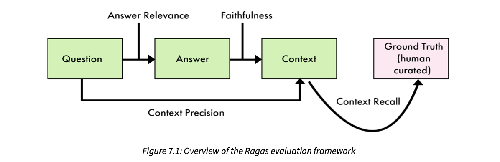
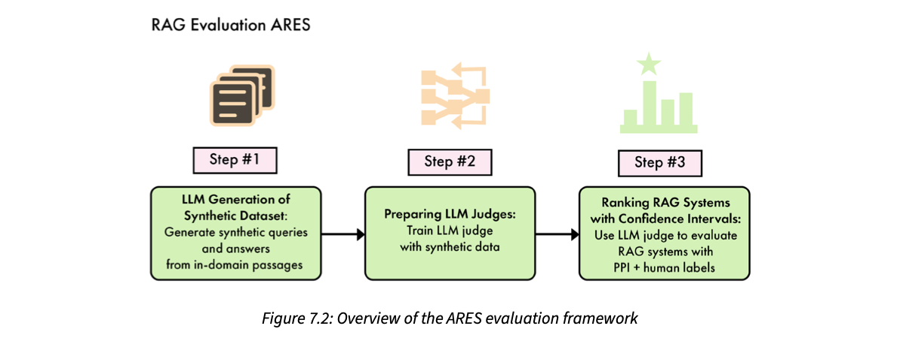

There is no single, agreed way to measure an LLM (large language model), only a set of patterns you adapt to your use case. The chapter moves in three steps. First, model evaluation: how it differs from classic ML (machine learning) evaluation, then three families of tests: general-purpose benchmarks (training loss and perplexity during pre-training, MMLU, HellaSwag and friends for base models, IFEval, Chatbot Arena, AlpacaEval, MT-Bench and GAIA for chat models), domain-specific leaderboards (medical, code, hallucinations, enterprise, Korean, Portuguese, Arabic) and task-specific evaluations you build yourself (ROUGE, accuracy/precision/recall/F1, multiple-choice quizzes, LLM-as-a-judge). Second, RAG (retrieval-augmented generation) evaluation, where the whole system is judged: retrieval, integration and factuality, using two frameworks, Ragas (LLM-assisted metrics: faithfulness, answer relevancy, context precision, context recall) and ARES (synthetic data + trained classifiers). Third, a hands-on evaluation of the book's own TwinLlama-3.1-8B (SFT) and TwinLlama-3.1-8B-DPO against Llama-3.1-8B-Instruct: answers are generated with vLLM and scored by GPT-4o-mini on accuracy and style. The DPO model writes in the most natural style; the official Instruct model stays the most accurate.
Read the rows top to bottom. Each highlighted box is the idea the next row reacts to. The chapter's one-line argument: the narrower your model or system, the more you must build your own evaluation; and once a model sits inside a RAG system, you must evaluate the whole pipeline, not just the model.
LLM evaluation is the process of checking how well an LLM performs and what it can do. The book stresses that it comes in many shapes:
Today there is no unified approach to measuring a model. What exists is a set of patterns and recipes you adapt to your own use case.
The best-known evaluations are general-purpose ones, like MMLU (Massive Multi-Task Language Understanding, a big multiple-choice exam) and LMSYS Chatbot Arena (people vote between two anonymous chatbots). But models built for one domain or one task are better served by narrower tests. This is even more true when you evaluate a whole LLM system rather than a bare model. Such systems are often built around a RAG (retrieval-augmented generation) pipeline, which adds new parts, such as retrievers (find relevant documents) and post-processors (clean or rerank what was found). Those parts must be evaluated too.
The chapter has three topics:
Goal: by the end you know the most popular LLM evaluations and how to evaluate both models and RAG systems with different techniques.
Hiring a cook for a dhaba. A general exam (can he chop, boil, fry?) tells you he is a decent cook. A domain test (can he make Punjabi dishes?) is narrower. A task test (does his dal makhani taste the way your customers like?) is narrowest, and only you can design it. And once he joins, you also judge the whole kitchen: did the helper bring the right ingredients (retriever), and did the cook actually use them (integration)? Where it breaks: a cook's dish can be tasted directly; an LLM's "taste" is often judged by another LLM, which has its own biases (plate 11).
"How would you evaluate an LLM feature?" → "I separate model evaluation from system evaluation. For the model, I look at public benchmarks only as a first filter, then build a task-specific set: exact metrics where the output is structured, a multiple-choice quiz or an LLM judge with a clear rubric where it is open-ended. For a RAG system, I add retrieval metrics and grounding metrics like faithfulness, because a great model with bad retrieval still gives bad answers."
Model evaluation means measuring what one model on its own can do: no prompt engineering, no RAG pipeline, no extra tools. You are testing the engine, not the whole car.
Why bother? The book gives two reasons (and says there are more):
The section is laid out as: first a comparison of ML and LLM evaluation (plate 3), then benchmarks for three kinds of models: general-purpose (plates 4–6), domain-specific (plates 7–8) and task-specific (plates 9–11).
Own diagram: the narrower the circle, the more likely you have to build the test yourself.
Isolating the model removes noise. If you test "model + prompt + retriever" together and the score drops, you can't tell which part broke. By testing the model alone first, you get a baseline; later system tests (plate 12) can then blame the right component.
ML evaluation checks models built for prediction, classification and regression. Its main question is: how accurately and efficiently does the model turn (usually structured) data into a specific outcome? LLM evaluation instead asks how well a model understands and produces language.
The difference comes from the tasks. A classic ML model solves one narrow problem, like predicting stock prices or spotting outliers, usually on numerical or categorical data, so scoring it is simple. An LLM interprets and writes language, and judging language is partly subjective. So LLM evaluation can't rely only on numbers; it often adds qualitative checks: is the reply coherent, relevant, and accurate in context?
The book lists three key differences:
| Aspect | Classic ML | LLMs |
|---|---|---|
| Numerical metrics | Objective metrics fit the task: accuracy, precision, recall, MSE (mean squared error). | One model does many tasks, so it needs many evaluations, and the same numeric metrics rarely apply. |
| Feature engineering | Humans pick and transform input features before training; judging whether that worked is part of model evaluation. | LLMs read raw text directly, so there is much less manual feature engineering to evaluate. |
| Interpretability | Easier to see why a prediction was made (e.g. feature importance); often part of evaluation. | Not directly possible. But you can ask the model to explain itself while generating, which gives some insight into its decisions. |
Looking ahead: evaluating general-purpose LLMs is far from ML evaluation, but task-specific LLMs come back close to it (plate 9), because their outputs are narrower and more structured.
Pick an output and see whether a crisp ML-style metric is enough.
Examples are modelled, not from the book.
A board-exam maths paper vs an essay paper. Maths: the answer is 42 or it isn't, so any teacher gives the same mark. Essay: two teachers may give 14/20 and 17/20, and you need a marking scheme (rubric) to keep them close. Classic ML is the maths paper; LLMs mostly write essays. Where it breaks: some LLM tasks (classification, extraction) are really maths papers in disguise, and there you should use the crisp metrics.
A classifier's output space is tiny (a few labels), so "correct" is a lookup. An LLM's output space is every possible string; many different strings are equally good answers. Any metric must therefore either compare meaning (hard, often needs another model) or force the output into a small space (multiple choice, JSON fields).
"Why can't you just use accuracy for an LLM?" → "Because there is usually no single right string. A classifier picks from a few labels, so accuracy works. An LLM writes free text, so I either constrain the output (multiple choice, structured JSON) to make it measurable, or I score meaning with a rubric and a judge model. And one LLM does many tasks, so I need a suite, not one number."
General-purpose evaluations are metrics for base models (only pre-trained) and general-purpose fine-tuned models (chat assistants). They test a broad mix of abilities tied to knowledge and usefulness, without targeting one task or domain. Developers use them to:
They fall into three phases: during pre-training, after pre-training (plate 5), and after fine-tuning (plate 5).
During pre-training you watch how the model learns (the book points back to the end of Chapter 5, where the same curves were read during SFT). The simplest metrics are low-level and match how models are trained:
You can also run benchmarks such as HellaSwag (common-sense reasoning) during pre-training, but the book warns of a risk: you may start overfitting to these evaluations, steering training toward the test instead of toward real ability.
Move the loss. Perplexity = eloss. A handy reading: "the model is as unsure as if it were choosing uniformly among this many tokens."
Formula from the book's definition; the "choose among N tokens" reading is a standard intuition, not a quote. Bar scale is log, modelled.
Step 1,000: train loss 2.10, validation loss 2.15 → perplexities ≈ 8.2 and 8.6. Healthy: both close.
Step 5,000: train loss 1.40, validation loss 2.30 → perplexities ≈ 4.1 and 10.0. Training keeps improving but validation got worse: the model is memorizing, not generalizing. Gradient norm suddenly jumping from ~1 to 40 at the same time would add a warning of instability.
Numbers are modelled for illustration.
Perplexity is like a cricket commentator guessing the next ball. A new commentator is "surprised" by everything: it could be any of 50 kinds of delivery. A veteran who knows the bowler narrows it to 3. Lower surprise = better model of the game. Where it breaks: a commentator can be unsurprised and still talk boringly; low perplexity says the model predicts text well, not that it is a helpful assistant. That's why later phases add real benchmarks.
Cross-entropy for one token is −log(probability the model gave to the correct token). Averaged over many tokens, then exponentiated, you get perplexity. If the model always gives the correct token probability 1/8, the loss is log 8 ≈ 2.08 and perplexity is exactly 8. Gradient norm is the length of the gradient vector: if it explodes, weight updates become huge and training diverges; if it vanishes, learning stalls.
"What is perplexity?" → "It's e to the power of the average cross-entropy loss: how surprised the model is by real text. Lower is better. A perplexity of 8 means the model is about as uncertain as picking uniformly among 8 tokens. It's a training-time health metric; it doesn't tell you if the model is a good assistant."
After pre-training, teams run a suite of evaluations on the base model. It mixes internal (private) and public benchmarks. The book's non-exhaustive list of common public ones:
| Benchmark | Tests | How |
|---|---|---|
| MMLU | knowledge | Multiple-choice questions over 57 subjects, from elementary school to professional level. |
| HellaSwag | reasoning | Given a situation, pick the most plausible ending from several choices. |
| ARC-C | reasoning | Grade-school multiple-choice science questions that need causal reasoning (the "Challenge" set). |
| Winogrande | reasoning | Common sense through pronoun resolution in carefully built sentences (who does "it" refer to?). |
| PIQA | reasoning | Physical common sense: questions about everyday physical interactions. |
Many of these datasets are also run on general-purpose fine-tuned models. Here the interesting number is the difference between the base model's score and the fine-tuned model's score:
The thresholds (−2, +3, +10) are modelled to make the book's idea concrete; only the "+10 is suspicious" example comes from the book.
Here "fine-tuned model" means a model trained with SFT (supervised fine-tuning, Ch.5) and preference alignment (Ch.6). Their benchmarks test what such models are for: understanding and answering. Specifically instruction-following, multi-turn conversation and agentic skills:
| Benchmark | Tests | How |
|---|---|---|
| IFEval | instruction following | Instructions with checkable constraints, e.g. "don't use any commas in your answer". |
| Chatbot Arena | conversation | Humans vote for the better answer when two models face each other head-to-head on the same instruction. |
| AlpacaEval | instruction following | Automatic evaluation for fine-tuned models, highly correlated with Chatbot Arena. |
| MT-Bench | conversation | Multi-turn conversations: does the model keep context and stay coherent? |
| GAIA | agentic | Many abilities like tool use and web browsing, in multi-step tasks. |
IFEval works because its constraints can be checked by code, with no judge. Type an "answer" to the instruction "Describe chai in one sentence, no commas, under 15 words."
Toy checker (modelled), in the spirit of IFEval's verifiable constraints.
MMLU is the JEE/NEET-style exam: many subjects, multiple choice, a clean score. Chatbot Arena is a Swayamvar-style contest: two suitors answer the same question and the audience picks one; ratings build up from many such duels. IFEval is a form with strict rules ("write in BLOCK LETTERS, no overwriting"): a clerk can check it mechanically. Where it breaks: exam toppers can still be bad at real jobs, and audiences can be swayed by style; see plate 6.
Base-model benchmarks probe what pre-training stored: facts (MMLU) and common-sense patterns (HellaSwag, PIQA, Winogrande, ARC-C). Chat-model benchmarks probe behaviour that SFT and preference alignment add: obeying constraints, holding a conversation, using tools. That's why you compare base vs fine-tuned on the first group (did we lose knowledge?) and compare chat models with each other on the second group.
"How would you detect benchmark contamination after fine-tuning?" → "Compare base and fine-tuned scores on a knowledge benchmark like MMLU. Fine-tuning mostly teaches format and style, so it shouldn't add many knowledge points; a jump like +10 MMLU is a strong hint the instruction data overlaps the test set. Then I'd check for n-gram overlap between the training data and the benchmark questions."
Knowing how these evaluations are built helps you pick the best LLM for your application:
The conclusion: benchmarks are not a single source of truth; use them as signals. When several independent evaluations point the same way, your confidence in the model's real ability can go up.
Model X claims to be best. Tick the evaluations that agree:
Confidence meter is a modelled illustration of "more agreeing signals → more confidence".
Choosing a restaurant on Zomato. A 4.6 rating is a signal, but ratings can be bought, and reviewers love big portions and pretty plating (long, formatted answers). Your friend's private recommendation is unbiased by marketing but based on few visits. If the rating, your friend, and a food blogger all agree, you go. Where it breaks: you can taste the food yourself in one visit; for an LLM, "tasting" means building your own task-specific test (plates 9–11).
Each benchmark has its own error: contamination for public sets, verbosity and format bias for human votes, untested labels for private sets. These errors are mostly independent, so when the benchmarks agree, the shared signal is likely real ability rather than any one benchmark's flaw.
"How did you choose which LLM to use?" → "Leaderboards only made the shortlist. I matched benchmarks to the job: for structured extraction or tool-calling I weigh instruction-following (IFEval-style) over chat preference scores. Then I ran our own small eval set on the shortlist, because public scores can be gamed and human-vote boards reward long, nicely formatted answers. I trusted a model once several signals agreed." For a realtime voice agent, add latency and cost as hard constraints next to quality.
Domain-specific LLMs cover less ground than general-purpose ones. That is useful: you can test finer-grained abilities in more depth than the broad benchmarks do.
Which benchmarks to use depends entirely on the domain. For common cases, like a language-specific model or a code model, the book recommends searching for existing evaluations and even benchmark suites. A suite bundles several benchmarks, is designed to be reproducible, and, by covering different aspects of the domain, usually captures domain performance more accurately than any single test.
Four examples with leaderboards on the Hugging Face Hub:
| Leaderboard | Domain | Contents at a glance |
|---|---|---|
| Open Medical-LLM | medical QA | 9 metrics · MedQA (1,273 US licence-exam Qs) · PubMedQA (500) · MedMCQA (4,183, Indian medical entrance exams) · 1,089 Qs from 6 MMLU medical sub-categories |
| BigCodeBench | code | Complete (from docstrings) + Instruct (from natural language) · ranked by Pass@1, greedy decoding · Elo for Complete |
| Hallucinations | false / unsupported info | 16 tasks, 5 categories: QA (NQ Open, TruthfulQA, SQuADv2) · reading (TriviaQA, RACE) · summarization (HaluEval Summ, XSum, CNN/DM) · dialogue (HaluEval Dial, FaithDial) · fact checking (MemoTrap, SelfCheckGPT, FEVER, TrueFalse) · plus IFEval |
| Enterprise Scenarios | business use | 6 cases: FinanceBench (100) · Legal Confidentiality (100, LegalBench) · Writing Prompts · Customer Support Dialogue · Toxic Prompts · Enterprise PII · some test sets closed-source |
Leaderboards take different approaches depending on the domain. BigCodeBench is unusual: just two metrics are enough to capture the whole domain. The Hallucinations Leaderboard groups 16 metrics, many of them general-purpose evaluations. Lesson: besides custom benchmarks, reusing general-purpose ones can complete your own suite.
A code model is given 200 problems, one greedy attempt each. 118 of the solutions pass all unit tests → Pass@1 = 118 / 200 = 59%. No partial credit: a solution that fails one test counts as wrong.
Numbers modelled.
A general MBBS exam vs a cardiology fellowship exam. The cardiology exam asks fewer topics but much deeper ones, and it borrows a few general medicine questions too. Similarly the Open Medical-LLM board reuses six MMLU medical sub-categories next to MedQA, PubMedQA and MedMCQA (from Indian medical entrance exams). Where it breaks: the domain board still uses multiple-choice; real clinical work is open-ended, so a high score is necessary, not sufficient.
Domain performance has several sides (for medicine: licensing knowledge, reading research, entrance-exam recall; for hallucination: QA, reading, summarization, dialogue, fact-checking). A suite samples each side, so a model can't top the board by being good at one narrow format. Closed test sets (Enterprise Scenarios) further stop models from training on the test.
"How would you evaluate a model for a specialised domain, say legal or finance?" → "Start from an existing domain suite if one exists, e.g. FinanceBench or LegalBench tasks, because they are reproducible and cover several sides of the domain. Add relevant general benchmarks (instruction-following, hallucination) and a few safety checks like PII and toxicity, as the Enterprise Scenarios board does. Then a private, closed set from our own data so nobody can overfit to it."
Language-specific LLMs (a model for Korean, Portuguese, Hindi…) often reuse translated versions of general-purpose benchmarks, and complete them with original evaluations written in the native language. Some translations are done by machine; the book says human-translated evaluations are better, for quality. Three leaderboards to show how such suites are built (the book calls them "task-specific" here, but they are the language-specific examples of this section):
| Leaderboard | Size | What's inside |
|---|---|---|
| OpenKo-LLM (Korean) | 9 metrics | Translated general benchmarks: GPQA, Winogrande, GSM8K, EQ-Bench, IFEval. Custom ones: Knowledge, Social Value, Harmlessness, Helpfulness. |
| Open Portuguese LLM | 9 benchmarks | Education: ENEM (1,430 questions) and BLUEX (724 university-entrance questions). Professional: OAB Exams (2,000+ questions). Language understanding: ASSIN2 RTE and STS, FAQUAD NLI. Social media: HateBR (7,000 Instagram comments), PT Hate Speech (5,668 tweets), tweetSentBR. |
| Open Arabic LLM | 2 native + 12 translated | Native Arabic: AlGhafa, Arabic-Culture-Value-Alignment. Translated: 12 benchmarks such as MMLU, ARC-Challenge, HellaSwag, PIQA. |
The book recommends two libraries for running benchmarks: lm-evaluation-harness from EleutherAI (github.com/EleutherAI/lm-evaluation-harness) and lighteval from Hugging Face (github.com/huggingface/lighteval).
Tick the parts you'd include for a Hindi assistant model.
The Hindi suite and the point values are modelled; the pattern (translated + native + a runnable library) is the book's.
Translating MMLU into Hindi by machine is like dubbing a Hollywood film with Google Translate: the plot survives but jokes and idioms break, and some questions become nonsense. A human dub is better, and an original Hindi film (native evaluation) tests things a dub never can, like cultural context. Where it breaks: a film only needs to entertain; a benchmark must also be unambiguous, so even human translators must re-check every answer key.
Translation preserves the skill being tested (reasoning, knowledge) but can't test language-specific knowledge (culture, local exams, local social media). Native benchmarks add that. Libraries matter because benchmark scores depend on small details (prompt format, few-shot examples, how answers are parsed); running everyone through the same harness keeps numbers comparable.
"How would you evaluate a model for an Indian-language voice assistant?" → "A mix: general benchmarks translated by humans, not machines, so I can compare to English baselines; native-language sets for culture and local knowledge; and task tests for my use case. I'd keep it complex, diverse and practical, and run it with a standard harness like lm-evaluation-harness or lighteval so results are reproducible."
General and domain benchmarks tell you that a base or instruct model is strong. They can't tell you how well it does your task. For that you need benchmarks built for the task, measuring downstream performance (performance on the real job).
Because task-specific models are so narrow, there is rarely a ready-made dataset. The upside: their outputs tend to be more structured, so traditional ML metrics often work.
ROUGE (Recall-Oriented Understudy for Gisting Evaluation) measures the overlap between the generated text and a reference text using n-grams (runs of n consecutive words).
Simplified ROUGE (lower-case, split on spaces, clipped counts). Recall = overlap / reference n-grams; precision = overlap / generated n-grams; F1 combines them. Example sentences modelled.
An LLM tags 100 support tickets as "refund request" or not.
True negatives = 100 − TP − FP − FN. Numbers modelled.
A railway TTE checking for ticketless passengers. Precision: of the people he fined, how many really had no ticket? (Fining honest people = false positives.) Recall: of all the ticketless people on the train, how many did he catch? (Missed ones = false negatives.) A TTE who fines everyone has perfect recall and terrible precision; F1 punishes that. Where it breaks: ROUGE is a different animal: it is like checking a summary by counting shared words, so "rain delayed the train" and "the train was late because of weather" score low despite meaning the same.
The harmonic mean is pulled toward the smaller number: P = 0.9, R = 0.1 gives F1 = 0.18, not 0.5. So a model can't hide a weak side. ROUGE is "recall-oriented" because its classic form asks how much of the reference got covered; it rewards overlap of surface words, so it misses paraphrases. That is the reason open-ended tasks move to judges (plate 11).
"Your LLM extracts entities from documents. How do you measure it?" → "That's a classic ML problem in disguise, so I use precision, recall and F1 per entity type against a labelled set. Precision tells me about false alarms, recall about misses, F1 balances them. For summaries I could use ROUGE against references, but since it only counts word overlap I'd pair it with an LLM judge for meaning."
When the task can't be mapped directly to a classic ML task, you can build a custom benchmark, inspired by the general and domain datasets above. A common, successful pattern is multiple-choice question answering: the instruction is a question plus several options, and the expected output is one letter.
Instruction: what is the degree of the field extension Q(√2, √3) over Q? Options: A. 0 B. 4 C. 2 D. 6.
Expected output: B
Why 4 (our explanation, not the book's): adding √2 to the rationals doubles the dimension (basis 1, √2); adding √3 doubles it again (basis 1, √2, √3, √6), so the degree is 2 × 2 = 4.
There are two main ways to score a model on such questions:
The book's recommendation: use the text-generation version, which mimics how a human takes a test. It is easier to implement and generally more discriminative (it separates good and bad models better), because low-quality models tend to overperform on probability-based evaluations. You can adapt the technique to quiz a model on your task, or extend it to a domain.
Probabilities and generated texts are modelled to show the book's point: a weak model can still rank the right option highest by a hair (log-likelihood counts that as correct) while failing to actually produce "B" when asked to answer.
Log-likelihood scoring is like a viva where the examiner reads out all four options and watches which one makes the student nod slightly more. Text generation is the written exam: the student must actually write "B" in the box. A weak student might nod a bit more at B by luck or vague familiarity, but in the written exam he writes "I think the answer involves fields…" and gets zero. Where it breaks: log-likelihood has real uses (fine-grained confidence, base models that can't follow instructions yet), so it's not "wrong", just less discriminative for this purpose.
Log-likelihood only asks for a ranking among options the evaluator provides, so the model never needs to follow the instruction format or commit. A tiny edge in probability counts as a full point. Text generation requires the whole chain: understand the question, follow the "answer with a letter" instruction, commit to one. That chain is what users actually experience, so it separates good and bad models more clearly.
"How would you build a quick regression test for a domain LLM?" → "Write a few hundred multiple-choice questions from our domain, ask the model to answer with just a letter, and compute accuracy by exact match. It's cheap, deterministic to grade, and catches regressions after each fine-tune or prompt change. I'd use generation-based scoring, not log-likelihood, since weaker models look better than they are under probability scoring."
If the task is too open-ended, neither classic metrics nor multiple choice fit. Then use LLM-as-a-judge, the technique introduced in Chapter 5 (there it scored dataset quality): a strong LLM reads the instruction and the answer and gives a score.
The book's practical advice:
The prompt tells the model it is an evaluator, asks for a score from 1 to 4 and defines each level. In our words:
It then fixes the output layout: an "Evaluation" header, an Explanation line (discuss relevance, helpfulness, complexity) and a Total rating line with the number; then slots for {instruction} and {answer}. It ends by pre-writing the start of the evaluation, so the model's first words are its explanation. You can change the scale, add a ground-truth answer, and customize it for your case.
# illustrative skeleton, our own wording
JUDGE = """You grade how well an ANSWER serves an INSTRUCTION.
Score 1-4: 1 off-topic | 2 on-topic, unhelpful
3 helpful, needs detail | 4 helpful and detailed
Reply as:
Explanation: <why>
Total rating: <1-4>
INSTRUCTION: {instruction}
ANSWER: {answer}
Explanation:"""You are the judge. Instruction: "How do I reset my UPI PIN?" Pick a candidate answer, then check which rubric properties it has. The score follows the 1–4 scale. Then flip on a bias to see how a biased judge would drift.
Answers and the bias effect are modelled. The 1–4 scale follows the book's Table 7.2.
Mitigations: combine LLM judgments with other metrics, use multiple judges, and design prompts carefully to counter the biases.
Once a model is properly evaluated and works as intended, it may be placed inside a bigger system, which changes how you evaluate (plate 12).
A senior teacher correcting answer sheets with a marking scheme. Without the scheme, she marks by gut feel and long, neat answers get more marks. With the scheme ("1 mark: mentions X; 2 marks: explains Y"), marks become consistent. Giving her the model answer (ground truth) helps even more. Where it breaks: a human teacher knows the subject; an LLM judge may confidently mis-mark a niche topic it doesn't understand, and it may give the same answer different marks on two reads.
Judging is easier than generating: checking an answer against a rubric needs less skill than writing it. That's why a large model can grade smaller ones. But the judge is still a next-token predictor trained on human preferences, so it inherits human tastes (length, confidence, polish). Structure (defined scales, explanation-first, JSON output) narrows the space of things it can say and makes its output machine-readable.
"What are the pitfalls of LLM-as-a-judge and how do you handle them?" → "Judges favour long and confident answers, can lack domain knowledge, and are inconsistent across runs. I use a rubric with defined levels, ask for an explanation before the score, give a reference answer when I have one, force JSON output, and check the judge against a small human-labelled set. For important decisions I use multiple judges or combine with hard metrics." In a RAG memory system, the same pattern can score whether a recalled memory actually answers the user's question.
Model evaluation looks at what the model can do on its own. RAG evaluation needs a wider view: the model's ability to generate and how it interacts with external information.
RAG systems combine LLMs with information retrieval. Their answers can be coherent and fit the context, and also be grounded in up-to-date, externally sourced information. That makes RAG especially valuable where current, accurate information matters: news reporting, research, customer support.
So you examine the entire system, on three questions:
Key metrics: retrieval precision (how much of what was fetched is relevant: accuracy) and retrieval recall (how much of what is relevant was fetched: comprehensiveness). Plus the quality of integration between retrieved data and generated text, and the overall factuality and coherence of the output.
The book will cover two methods for evaluating how well RAG systems use external information: Ragas and ARES.
An open-book exam. Three things can go wrong: the student opens the wrong chapter (retrieval), opens the right one but ignores it and writes from memory (integration), or copies something correct but not what was asked (relevance). A good examiner checks all three, not just the final mark. Where it breaks: in the exam the "book" is fixed; in RAG the knowledge base changes daily, so evaluation must be repeated as data changes.
A RAG answer is the product of a chain. If retrieval recall is 70% and the LLM uses retrieved facts correctly 90% of the time, roughly only ~63% of answers can be both complete and correct (modelled arithmetic). Measuring each link tells you which one to fix: the retriever (embedding model, chunking, reranker) or the generator (prompt, model).
"Your RAG chatbot gives wrong answers. How do you debug it?" → "Split it: first check retrieval on a labelled set: are the right chunks in the top-k (precision and recall)? If retrieval is fine, check integration: is the answer faithful to the retrieved context, or is the model ignoring it? Finally check answer relevance to the question. Comparing answers with and without context also shows whether retrieval actually helps." Directly relevant to RAG memory: wrong recall and unused recall are different bugs.
Ragas (Retrieval-Augmented Generation Assessment) is an open-source toolkit for evaluating and optimizing RAG systems. It is built around metrics-driven development (MDD): a product approach that relies on data for decisions, monitoring key metrics over time to understand how the application performs. With it, developers can assess RAG systems objectively, find what to improve, and track the effect of each change.
Writing hundreds of questions, answers and contexts by hand is slow and labour-intensive, a real pain point. Ragas can generate diverse, complex test datasets synthetically. It uses an evolutionary approach inspired by work like Evol-Instruct: start from simple questions and "evolve" them to have varied traits such as reasoning complexity, conditional elements and multi-context requirements (answers that need several documents). That way, different parts of the pipeline all get tested.
Ragas can also generate conversational samples: a question followed by follow-ups, like a real chat, so the system is tested in more realistic scenarios.

How to read this figure. Four green/pink boxes are the four things in a RAG test sample: Question, Answer, retrieved Context, and a Ground Truth answer written by humans (pink, because it's the only human-made part). Each arrow is a metric that compares two of them. Answer Relevance sits on the Question→Answer arrow (does the answer fit the question?). Faithfulness sits on Answer→Context (is the answer backed by the context?). Context Precision runs along the bottom from Question to Context (is the useful context ranked high for this question?). Context Recall is the curved arrow from Context to Ground Truth (does the context contain everything the true answer needs?). Two metrics judge generation (top), two judge retrieval (bottom/right).
Question: "What is the return policy for laptops bought in the holiday sale?"
Ground truth (human): 60-day return window · longer than the standard 30 days · original packaging and accessories needed.
The answer was split into claims. Tick the ones you can find in the retrieved context (docs: "electronics returns: 30 days, original packaging" and "holiday sale: returns extended to 60 days").
An LLM wrote 3 questions from the answer; each is compared with the original question by cosine similarity of embeddings. Pick which answer we are scoring:
The retriever returned 4 chunks in this order. Click a chunk to mark it relevant / not relevant and watch how position changes the score.
Tick each ground-truth claim that can be attributed to the retrieved context.
Toy data and cosine values are modelled. Faithfulness, answer relevancy and context recall follow the book's definitions. The exact context-precision formula (average of precision@k at each relevant position) is beyond the book, from the Ragas documentation.
Ragas also gives building blocks to monitor RAG quality in production, for continuous improvement. Combining test-set results with production insights, developers iterate: e.g. fine-tuning retrieval algorithms, adjusting prompt engineering, or rebalancing retrieved context vs LLM generation.
Ragas can be complemented by an approach based on custom classifiers: ARES (next plate).
A newspaper fact-checking desk. Faithfulness: every sentence in the reporter's story must trace back to his notes. Answer relevancy: the story answers the headline's question, not a different one. Context precision: the most useful notes were on top of the pile, not buried. Context recall: the notes contained every fact the ideal story needs. Where it breaks: Ragas uses an LLM to do this checking, so the checker can itself make mistakes (plate 11 biases apply).
Faithfulness and answer relevancy need no human ground truth: they compare answer↔context and answer↔question. Context recall needs the human ground truth (the pink box). Context precision needs to know which chunks are relevant. Answer relevancy is clever: if an answer is on-topic, a question reconstructed from it should look like the original question in embedding space; an off-topic answer reconstructs a different question, so similarity drops.
"Name some RAG evaluation metrics." → "Ragas gives four: faithfulness (share of answer claims supported by retrieved context, which catches hallucination), answer relevancy (generate questions from the answer and compare them to the real question with cosine similarity), context precision (are the relevant chunks ranked at the top) and context recall (does the context cover every claim of a human reference answer). The first two need no labels, so they can run on production traffic."
ARES (an automated evaluation framework for RAG systems) is a comprehensive RAG evaluation tool. It automates the process by combining synthetic data generation with fine-tuned classifiers to judge context relevance, answer faithfulness and answer relevance.
It runs in three stages, each configurable to your needs and datasets:

How to read this figure. Three steps, left to right, each with an icon. Step #1 (stack of documents): an LLM generates a synthetic dataset of queries and answers from your own in-domain passages. Step #2 (branching arrows): train LLM judges on that synthetic data. Step #3 (bar chart with a star): use the judges to rank RAG systems, with confidence intervals, combining the judge's predictions with a small set of human labels through "PPI". Beyond the book: PPI stands for prediction-powered inference, a statistical method that uses a few human labels to correct the bias of an automatic judge and give valid confidence intervals.
Execution is flexible: cloud-based or local runs (local through vLLM integration). ARES also supports many artifact types: code snippets, documents, HTML, images and more, so different kinds of RAG outputs can be evaluated.
| Ragas | ARES | |
|---|---|---|
| Judge | LLM-assisted metrics (prompting an LLM) | Trained classifiers (default deberta-v3-large) |
| Synthetic data | Yes: evolutionary, Evol-Instruct-style, plus conversations | Yes: queries + answers from in-domain passages (default flan-t5-xxl) |
| Strength | Production monitoring; more nuanced judgments using LLM abilities | Highly configurable; consistent and potentially faster once classifiers are trained; confidence intervals |
| Best used for | Quick iterations | In-depth, customized evaluation at key stages |
Both generate synthetic data; they differ in how they score (context-based LLM metrics vs trained classifiers). Combined, they give a comprehensive framework.
Ragas is like asking a senior professor to grade each answer sheet: nuanced, but slow and his mood varies. ARES is like using the professor's graded samples to train a team of TAs on one narrow skill each ("is this paragraph relevant? yes/no"). Training takes effort, but then the TAs grade thousands of sheets quickly and consistently, and a few sheets re-checked by the professor (human labels) tell you how much to trust the totals. Where it breaks: TAs trained on one subject's sheets don't transfer to another subject; ARES classifiers must be retrained per domain.
A fine-tuned classifier (DeBERTa) outputs a probability for "relevant" or "faithful" in one forward pass: cheap and deterministic, unlike sampling a big LLM judge. Its training labels come from the synthetic data (a query generated from passage X is "relevant" to X; mismatched pairs are negatives). Because it was trained on synthetic data, its errors are corrected statistically with a few human labels, producing confidence intervals rather than a bare number.
"LLM judges are slow and expensive at scale. Alternatives?" → "Distil the judgment into a small classifier, like ARES does: generate synthetic query–passage–answer triples, train a DeBERTa-size classifier for context relevance and faithfulness, then score thousands of RAG outputs cheaply and consistently, with a small human-labelled set to calibrate and get confidence intervals. I'd still use an LLM judge (Ragas-style) for fast iteration while the system changes quickly."
Earlier chapters produced two models fine-tuned to write good posts and articles: TwinLlama-3.1-8B (SFT, Ch.5) and TwinLlama-3.1-8B-DPO (preference-aligned, Ch.6). The question now: do they write text that is both accurate and well written?
The contrast the authors care about: general-purpose fine-tuned models are accurate thanks to broad knowledge, but often sound overly formal and verbose. The goal of this fine-tuning was a more natural writing style, learned from the original articles in the training set.
The task is open-ended (plate 11), so a judge LLM evaluates the text. It reads the instruction and the answer and scores on a 1–3 scale on two criteria:
The framework, step by step:
A third model joins as a reference point: meta-llama/Meta-Llama-3.1-8B-Instruct, the official instruct version of the same base model. It shows what trade-offs the custom fine-tuning made.
A ghostwriter audition. Two trainee ghostwriters (SFT and DPO) and one experienced staff writer (Llama Instruct) each write answers to the same 334 prompts. An editor (GPT-4o-mini) gives each answer two marks: "is it correct?" and "does it sound like a LinkedIn post, not a thesis?". Where it breaks: a human editor knows the author's voice; GPT-4o-mini only knows the style described in its prompt.
Comparing against the official Instruct model isolates the effect of our fine-tuning: same base (Llama 3.1 8B), same prompts, same judge; only the post-training differs. Two separate criteria matter because the goal is a trade-off: change style without losing accuracy. A single "overall quality" score would hide that.
"How did you check your fine-tune was worth it?" → "Held-out test split, the fine-tuned model and the official instruct model of the same base as a baseline, identical prompts, and an LLM judge scoring separate criteria that match the goal: here accuracy and style. Separate criteria show the trade-off: our model may win on style while the baseline keeps an edge on accuracy."
Step one is to generate an answer for every test instruction, efficiently, for all three models. The book uses vLLM, which is much faster than Hugging Face transformers for batch generation with local models. The steps, with our own short versions of the code:
LLM and SamplingParams, load_dataset from datasets, tqdm for progress bars, and gc for memory clean-up.generate_answers(model_id, dataset_name) that loads the dataset's test split.prompt column.TEMPLATE = ("Below is an instruction that describes a task. "
"Write a response that appropriately completes the request.\n\n"
"### Instruction:\n{}\n\n### Response:\n")
def build_prompt(row):
return {"prompt": TEMPLATE.format(row["instruction"])}
test_set = load_dataset(dataset_name, split="test").map(build_prompt)engine = LLM(model=model_id, max_model_len=4096)
params = SamplingParams(temperature=0.8, top_p=0.95,
min_p=0.05, max_tokens=4096)
results = engine.generate(test_set["prompt"], params)max_model_len=4096: the longest prompt + answer the engine will handle (also caps KV-cache memory).temperature=0.8: flattens the probability distribution a bit → more varied wording.top_p=0.95: keep only the smallest set of tokens whose probabilities add up to 95%.min_p=0.05: drop any token whose probability is below 5% of the top token's probability.max_tokens=4096: the longest answer allowed.generate(list, params): passing the whole list lets vLLM batch everything on the GPU.Toy next-token logits after "Algorithm bias is a ___". Move the sliders and see which tokens survive.
Logits are modelled. Defaults are the book's values (0.8 / 0.95 / 0.05). Tokens in amber survive both filters and are re-normalised before sampling.
answers column. Logging answers this way lets you review them later.mlabonne/<model name>-results, then run gc.collect() to free memory before loading the next model.mlabonne/TwinLlama-3.1-8B, mlabonne/TwinLlama-3.1-8B-DPO, meta-llama/Meta-Llama-3.1-8B-Instruct) on the dataset mlabonne/llmtwin, one at a time. Each run uploads its own results dataset.texts = [r.outputs[0].text for r in results] # first completion per prompt
test_set = test_set.add_column("answers", texts)
test_set.push_to_hub(f"{hub_user}/{model_id.split('/')[-1]}-results")
gc.collect() # free memory before next model
for mid in [twin_sft, twin_dpo, llama_instruct]:
generate_answers(mid, "mlabonne/llmtwin")vLLM vs plain transformers is like a Mumbai dabbawala system vs one delivery boy per tiffin. The dabbawalas batch hundreds of tiffins through shared trains and sort them cleverly, so throughput is huge. For 334 prompts × 3 models, batching wins. Where it breaks: dabbawalas don't care about one tiffin's latency; vLLM also has to serve streaming users (Ch.8 and Ch.10 cover that).
Temperature divides the logits before softmax: below 1 sharpens, above 1 flattens. top_p (nucleus) and min_p then cut the long tail of unlikely tokens, so high temperature gives variety without nonsense. Using the same template for all models is a simplification: the Instruct model may perform slightly differently with its native Llama 3 template, which is a small bias in the comparison. Saving to the Hub after each model makes the pipeline restartable.
"Why vLLM for offline evaluation?" → "It does continuous batching and PagedAttention for the KV cache, so throughput on hundreds of prompts is far higher than looping over transformers' generate. I pass the whole prompt list in one call, then save outputs before moving to the next model, and free GPU memory between models." (PagedAttention and continuous batching are beyond this chapter; see Ch.8.)
Every generated answer from every model is scored by GPT-4o-mini on accuracy and style. The approach mirrors the data generation of Ch.5; in fact, the book notes you could adapt this same judge to filter out bad samples while generating training data. The average scores then show how our fine-tuning compares to Llama-3.1-8B-Instruct.
Imports: json, List from typing, Dataset/load_dataset, the OpenAI client, tqdm, and concurrent.futures for threads. Then evaluate_answer(instruction, answer, client) builds the prompt. Its content, restated:
{instruction} and {answer}, then a request for JSON shaped as accuracy: {analysis, score} and style: {analysis, score}.| Score | Accuracy | Style |
|---|---|---|
| 1 · Poor | Has factual errors or misleading information. | Too formal; some overly complex words. |
| 2 · Good | Mostly accurate; minor errors or omissions. | Balances technical content and accessibility, but still uses formal words and expressions. |
| 3 · Excellent | Highly accurate and comprehensive. | Perfectly accessible for blog/social media; simple but precise technical terms when needed. |
A Likert scale is a small ordered rating scale (like 1–3 or 1–5) where each point has a label.
Instruction: "Explain what a vector database is." Pick an answer, then pick your scores. The page builds the JSON the judge is asked to return.
Answers and "fair judge" scores are modelled; the scales and JSON shape follow the book.
The prompt goes in as the user message. A system message reinforces the job: evaluate answers on accuracy and style, return JSON with a short analysis and a score per criterion.
reply = client.chat.completions.create(
model="gpt-4o-mini",
messages=[{"role": "system", "content": SYSTEM_NOTE},
{"role": "user", "content": judge_prompt}],
response_format={"type": "json_object"}, # JSON mode
max_tokens=1000,
temperature=0.8,
)response_format={"type": "json_object"}: OpenAI's JSON mode; output is valid JSON, which makes parsing easy (plate 11's structured-generation advice).max_tokens=1000: room for two short analyses plus scores.temperature=0.8: the book's setting. Note (our remark, not the book's): a non-zero temperature makes the judge less deterministic; plate 11 lists inconsistency as a known judge weakness, so many teams use a low temperature for judges.As in earlier chapters, requests are batched. evaluate_batch(batch, start_index) creates an OpenAI client and returns a list of (index, evaluation) pairs. The indices matter: threads finish in random order, and the index puts each result back in the right row. evaluate_answers(model_id, num_threads=10, batch_size=5) loads the saved results dataset, slices it into batches of 5 instruction–answer pairs, and submits them to a ThreadPoolExecutor with 10 workers. As futures complete, each evaluation is written into a pre-sized list at its index.
batches = [(i, list(zip(ds["instruction"][i:i+size], ds["answers"][i:i+size])))
for i in range(0, len(ds), size)]
results = [None] * len(ds)
with ThreadPoolExecutor(max_workers=threads) as pool:
jobs = [pool.submit(evaluate_batch, b, start) for start, b in batches]
for job in as_completed(jobs):
for idx, ev in job.result():
results[idx] = ev # index keeps the order right334 / 5 = 67 batches (the last one has 4). Each square is one batch; colours show which of the 10 threads handled it. Completion order is random (simulated), but each result lands in its own slot thanks to the index.
evaluation column with the judge's raw JSON (scores and explanations). If the column already exists from an earlier run, remove it first.json.loads() (if it's a string) and read ["accuracy"]["score"] and ["style"]["score"]. Generation is best effort: scores aren't guaranteed. On a JSONDecodeError, KeyError or TypeError, store None as a fallback.accuracy and style columns (again dropping old ones first) and push the final dataset (answers, evaluations, scores) to the Hub.evaluate_answers() for the three models.def read_scores(raw):
try:
d = json.loads(raw) if isinstance(raw, str) else raw
return d["accuracy"]["score"], d["style"]["score"]
except (json.JSONDecodeError, KeyError, TypeError):
return None, None # best effort: don't crash the runSaving intermediate results makes the framework robust to failures, and it is easy to extend to other models, datasets and criteria.
A board-exam evaluation centre. 334 answer sheets are bundled in packets of 5 and handed to 10 examiners at once. Each packet carries roll numbers, so even if examiner 7 finishes before examiner 2, marks go into the right row of the register. A sheet with an illegible mark gets "absent" (None) instead of stopping the whole centre. Where it breaks: human examiners don't hit API rate limits; with real APIs, more threads can trigger throttling.
API calls are I/O-bound (waiting on the network), so Python threads give real speed-up despite the GIL. Batching reduces client overhead; the index-based write makes the result independent of completion order. JSON mode guarantees valid JSON syntax but not the exact keys, which is why the parser still catches KeyError.
"How would you run an LLM judge over thousands of samples?" → "Batch the samples, fan them out with a thread pool since the calls are I/O-bound, carry an index so results map back regardless of completion order, force JSON output, parse defensively with a None fallback and count failures, and persist intermediate results so a crash doesn't cost the whole run. I'd keep the judge temperature low for consistency and add retry with backoff for rate limits." Same pattern as fanning out tool calls in an agent backend.
At the end, there are three things to review: the model answers, the judge's explanations, and the scores.
Reading answers doesn't scale, but it is crucial: it catches common mistakes such as a wrong chat template or the wrong model being loaded. The book reads the three answers to one instruction: "Discuss the concept of algorithm bias and its implications."
| Model | What its answer looked like |
|---|---|
| TwinLlama-3.1-8B (SFT) | One compact paragraph: defines algorithm bias as skewed or unfair outcomes from underlying assumptions or programming biases; notes the stakes in ML/AI decisions; examples of lending and hiring discrimination; ends by calling for fairness and accuracy in design. |
| TwinLlama-3.1-8B-DPO | Nearly the same paragraph, with slightly simpler wording: examples become denying loans and perpetuating stereotypes; ends by saying bias should be tackled proactively so technology is equitable and just. |
| Llama-3.1-8B-Instruct | Very long, essay-like: causes (data, algorithm, society), many examples (facial recognition and wrongful arrests, language models biased toward dominant dialects, healthcare misdiagnosis, education), mitigation techniques (data cleansing, regularization, debiasing, diverse datasets, involving stakeholders), and a formal "in conclusion" ending. |
The book's reading: the two Twin models' answers are very close to each other. Llama-3.1-8B-Instruct's is extremely verbose with many examples: correct, but it can feel artificial and unpleasant to read because of its length. The DPO model slightly simplifies the SFT model's language, making it less academic. That is exactly the goal: change the writing style, not the content.
| Model | Accuracy | Style | Judge's reason (paraphrased) |
|---|---|---|---|
| TwinLlama-3.1-8B | 3 | 2 | Accurate, no factual errors. Style informative and fairly accessible, but leans formal in places (it quotes "underlying assumptions or programming biases"); could be simpler for a blog audience. |
| TwinLlama-3.1-8B-DPO | 3 | 3 | Accurate, comprehensive overview. Style clear and accessible, communicates the concept without becoming overly formal; technical terms are appropriate. |
| Llama-3.1-8B-Instruct | 3 | 2 | Accurate and comprehensive (causes, domains, mitigation). Style accessible, but some phrases could be simpler and it would benefit from a more conversational tone. |
So the judge sees no accuracy problem (all 3s), rates SFT and Instruct too formal (2), and gives DPO a perfect style score, agreeing with the manual reading.
Values from the book (pdf p315). Zooming exaggerates differences; with the full axis you see how close the models really are. That gap-size question is worth asking of any eval chart.
| Model | Accuracy | Style |
|---|---|---|
| TwinLlama-3.1-8B | 2.45 | 2.04 |
| TwinLlama-3.1-8B-DPO | 2.46 | 2.12 |
| Llama-3.1-8B-Instruct | 2.62 | 1.86 |
Using this feedback plus manual review, you can find mistakes and areas to improve, mainly by refining data generation: more filtering, or adding missing information to the dataset. This first version already looks promising; iterating on datasets and models should beat the baseline clearly and give the best model for the use case.
Three cooks make the same dish. The hotel's head chef (Instruct, trained on 10 million orders) gets the recipe most exactly right but serves a 12-course portion when you asked for a snack. Your home cook (SFT) gets it nearly as right in a sensible portion. After feedback on taste (DPO), the home cook's dish tastes most like what you wanted. Where it breaks: these are averages from one LLM judge with temperature 0.8; small differences like 2.45 vs 2.46 are within noise.
SFT taught the format and some style from 13k examples; DPO then pushed the model toward preferred (more natural) answers and away from rejected (more formal) ones, which moves style without much effect on knowledge. Accuracy depends mostly on knowledge and on how much post-training data was used, where Meta's Instruct model has a big head start. Note also the judge's own preference: verbose answers are often rated higher (plate 11), yet here the verbose model got the lowest style score because the rubric explicitly asked for blog style.
"Your fine-tuned model scores lower on accuracy than the official instruct model. Ship it?" → "Depends on the goal. Ours was style: DPO improved style from 1.86 to 2.12 while accuracy dropped from 2.62 to 2.46 on a 3-point judge scale. I'd check if that accuracy gap is real (confidence intervals, judge variance, a human spot-check), read the failing answers, and improve the data, e.g. filter weak samples with the same judge, before deciding. And I'd always read some raw outputs, since they catch template bugs that scores hide."
The book's summary, in plain words:
The summary says TwinLlama was judged on "relevance, coherence, and conciseness". The actual evaluation in the chapter (pdf p305, p307–308) used two criteria: accuracy and style. This page follows the code and results, i.e. accuracy and style.
| Term | Meaning |
|---|---|
| Model evaluation | Testing one model alone, without prompt engineering, RAG or tools. |
| Cross-entropy loss | Gap between predicted next-token distribution and the true next token; the training objective. |
| Perplexity | eloss: how "surprised" the model is by data. Lower is better. |
| Gradient norm | Size of the gradients; spikes or collapse signal unstable training. |
| MMLU | Multiple-choice knowledge benchmark over 57 subjects. |
| HellaSwag / ARC-C / Winogrande / PIQA | Reasoning benchmarks: plausible endings, science questions, pronoun resolution, physical common sense. |
| IFEval | Instruction following with checkable constraints. |
| Chatbot Arena | Humans vote between two models' answers, head to head. |
| AlpacaEval / MT-Bench / GAIA | Automatic Arena-like eval / multi-turn conversation / multi-step agentic tasks. |
| Contamination | Training data that overlaps the test set, inflating scores (e.g. +10 MMLU after fine-tuning). |
| Benchmark suite | A reproducible bundle of benchmarks covering several aspects of a domain. |
| Pass@1 | Share of coding problems solved by the first generated solution. |
| ROUGE | N-gram overlap between generated and reference text (summarization). |
| Precision / recall / F1 | Correct among predicted positives / found among actual positives / their harmonic mean. |
| Log-likelihood evaluation | Scoring multiple choice by the model's probability for each option, without generating text. |
| LLM-as-a-judge | A strong LLM scores answers with a rubric; biased toward long, confident answers. |
| Structured generation | Forcing output into a format (Outlines, OpenAI JSON mode) so it can be parsed. |
| Likert scale | Small ordered rating scale with labelled points (here 1–3). |
| Retrieval accuracy / integration quality / factuality | The three things RAG evaluation checks. |
| Ragas | Open-source RAG evaluation toolkit: synthetic test sets, LLM-assisted metrics, production monitoring. |
| Metrics-driven development (MDD) | Making product decisions by tracking key metrics over time. |
| Faithfulness | Share of answer claims that can be inferred from the retrieved context. |
| Answer relevancy | Mean cosine similarity between questions generated from the answer and the original question. |
| Context precision | Whether relevant context is ranked at the top. |
| Context recall | Share of ground-truth claims that the retrieved context supports. |
| ARES | RAG evaluation with synthetic data + fine-tuned classifiers + confidence intervals. |
| vLLM | Fast inference engine used for batch generation (and by ARES for local runs). |
| top_p / min_p | Sampling filters: keep the 95% probability nucleus / drop tokens below 5% of the top token's probability. |
| Name | What it does with the idea |
|---|---|
| LMSYS Chatbot Arena | Crowd-sourced head-to-head human voting between chat models. |
| Hugging Face Hub leaderboards | Host domain boards: Open Medical-LLM, BigCodeBench, Hallucinations, Enterprise Scenarios, OpenKo-LLM, Open Portuguese, Open Arabic. The Hub also stores the book's results datasets. |
| EleutherAI lm-evaluation-harness | Standard library to run benchmarks; scores MMLU by comparing option probabilities. |
| Hugging Face lighteval | Hugging Face's library for running benchmark suites. |
| Outlines / OpenAI JSON mode | Structured generation so judge outputs are parseable. |
| Ragas | RAG metrics (faithfulness, answer relevancy, context precision/recall), synthetic test generation, production monitoring. |
| ARES | RAG evaluation via synthetic data (google/flan-t5-xxl) and trained classifiers (microsoft/deberta-v3-large), with confidence intervals. |
| Evol-Instruct | The "evolve the instruction" idea Ragas borrows to make harder test questions. |
| vLLM | Fast batched generation of answers for the 334 test prompts; local runs for ARES. |
| OpenAI GPT-4o-mini | The judge that scores accuracy and style, in JSON mode. |
| Meta Llama-3.1-8B-Instruct | Baseline: official instruct model of the same base, post-trained on 10M+ samples. |
| TwinLlama-3.1-8B / -DPO | The book's SFT and DPO models, published under mlabonne on the Hub. |
Other common tools for the same jobs (not named in the chapter): DeepEval, TruLens, LangSmith and Arize Phoenix for RAG and judge-based evaluation and tracing; OpenAI Evals and Inspect for model evals. The concepts on this page carry over directly.
Numerical metrics (ML has crisp ones; LLMs do many tasks and rarely share one metric), feature engineering (part of ML evaluation; LLMs read raw text), interpretability (easier for ML; for LLMs you can ask for explanations during generation).
The exponential of the cross-entropy loss, measuring how surprised the model is by the data. Lower is better.
You may overfit to the evaluation: steering training toward the benchmark instead of general ability.
Contamination: the instruction data is probably too close to the test set. Such a gain from fine-tuning is unlikely.
IFEval. Extraction needs strong instruction-following, not conversational charm.
Public sets can be gamed by training on test-like data; human raters prefer long, confident, nicely formatted answers; private sets are less scrutinized and may have their own biases. Hence: use them as signals and look for agreement.
Complex (separates good from bad), diverse (many topics and scenarios), practical (easy to run, e.g. with lm-evaluation-harness or lighteval).
It mimics a human taking the test, is easier to implement and more discriminative; low-quality models tend to overperform on probability-based evaluation.
Bias toward assertive/verbose answers, lack of domain expertise, inconsistency, implicit style preferences. Mitigate by combining with other metrics, using multiple judges, careful prompt design (plus ground-truth answers when available).
4 / 5 = 0.8.
An LLM generates several questions from the answer; the score is the mean cosine similarity between them and the original question. It catches answers that are correct but off-topic or incomplete.
Context recall: it checks each ground-truth claim against the retrieved context.
Synthetic data generation (google/flan-t5-xxl), classifier training (microsoft/deberta-v3-large), RAG evaluation with confidence intervals.
Threads finish in any order; the index puts each evaluation back in the correct row.
Its huge post-training (over 10 million samples vs 13,000 for TwinLlama) likely gives it an edge in facts, but it tends to be verbose and formal, which the style rubric penalizes. DPO got the best style (2.12).